Para quién es este manual
Para el administrador de la central: la persona que la pone en marcha, conecta las troncales,
crea los internos y decide cómo entran y salen las llamadas. Se lee en orden la primera vez, y
después se usa como referencia por sección.
1. Orden de puesta en marcha
Este es el recorrido completo. Si lo seguís en este orden, cada paso se apoya en el anterior y no vas a tener que volver atrás.
| # | Paso | Dónde | Por qué va acá |
|---|---|---|---|
| 1 | Módulos activos | Configuración → Módulos | Define qué contenedores existen |
| 2 | Dominio y certificado | Configuración → Proxy / TLS | Sin TLS no hay softphone web |
| 3 | Componentes (IPs) | Configuración → Componentes | El panel necesita saber dónde vive cada pieza |
| 4 | Marca | Configuración → Branding | Aparece en el panel y en los correos |
| 5 | SBC | SBC-NG | El borde: seguridad, operadores, medios |
| 6 | Troncal | Troncales | La línea con el mundo |
| 7 | Rutas salientes | Rutas → Salientes | Qué se marca y por dónde sale |
| 8 | Rutas entrantes | Rutas → Entrantes | Qué pasa cuando te llaman |
| 9 | Internos | Internos | Las personas |
| 10 | Correo | Configuración → Email | Sin esto no hay QR, ni buzón por mail, ni alertas |
| 11 | Entrega de teléfonos | Internos → Enviar acceso | El QR y el enlace |
| 12 | Aplicaciones | Aplicaciones | Colas, IVR, buzones, conferencias |
| 13 | Alertas | Configuración → Alertas | Que la central te avise a vos |
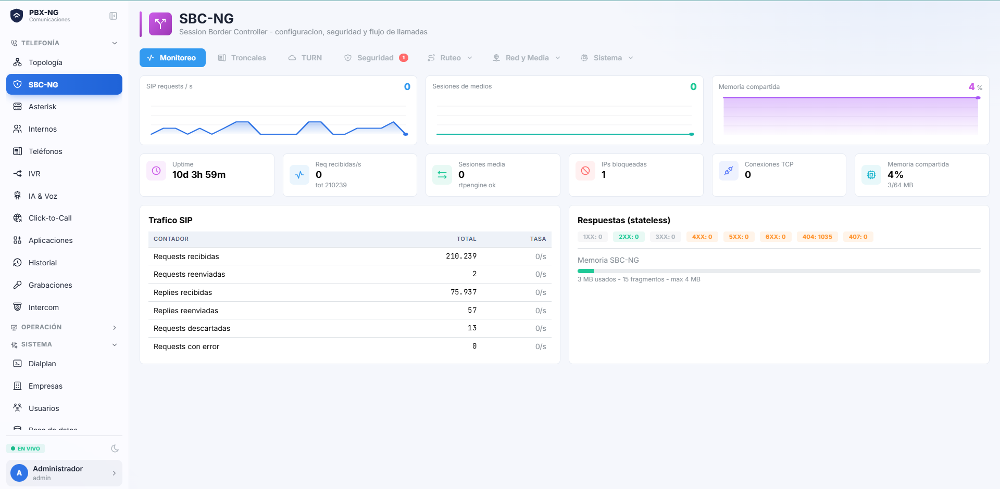
2. Configuración inicial del sistema
Todo esto vive en Configuración, y son los cimientos.
2.1 Módulos
Un módulo activo es un contenedor corriendo; uno inactivo no existe. Acá prendés y apagás el SBC, el TURN, el motor de voz (IA) y el intercom. El cambio crea o destruye el contenedor de verdad: no es una casilla decorativa.
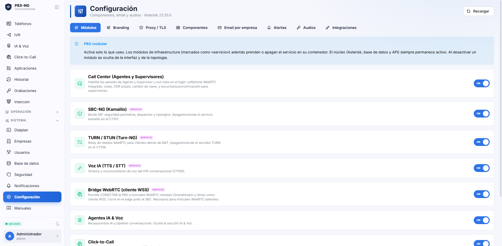
2.2 Proxy / TLS
El reverse proxy (Nginx Proxy Manager) termina el TLS y publica el panel y el WebSocket de los softphones. Acá cargás la URL de administración del NPM, el dominio público y las credenciales, y el panel te vigila el vencimiento del certificado.
Un detalle que rompe el softphone web y cuesta encontrar: en el host del proxy hay que
desactivar HTTP/2. Con HTTP/2 activo, el WebSocket (
/ws) no se establece y el teléfonoqueda "conectando" para siempre.

2.3 Componentes
Es el mapa de la instalación: en qué IP está el Asterisk, el SBC, el TURN, el motor de voz y el anclaje de medios. El panel usa esto para consultarlos y para dibujar la topología. Si moviste una pieza de servidor, se actualiza acá.
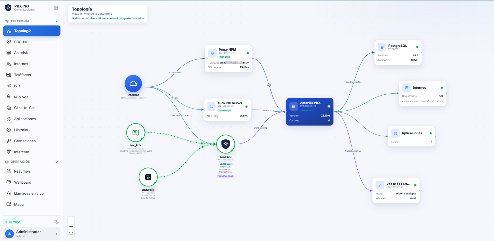
2.4 Branding
Nombre, subtítulo y logo. Aparece en el panel, en el login, en los correos de alerta y en los manuales.
2.5 Audios e Integraciones
Audios: los mensajes del sistema. Se pueden subir archivos, pero lo normal es escribir el texto y que lo sintetice la central con su propia voz.
Integraciones: notificaciones a Telegram/WhatsApp y otros ganchos externos.
3. SBC-NG · el borde de la central
Esta es la sección más importante del sistema, y la que menos se entiende. Vale la pena leerla entera antes de conectar la primera troncal.
3.1 ¿Qué es el SBC y por qué existe?
Un SBC (Session Border Controller) es un guardián que se para entre Internet y tu central. Asterisk sabe manejar llamadas, pero no está pensado para estar desnudo frente a Internet: en cuestión de horas empieza a recibir miles de intentos de registro de robots buscando internos con contraseñas débiles.
El SBC hace cinco cosas que Asterisk no debería hacer solo:
- Escudo. Filtra, limita y bloquea antes de que el tráfico llegue a la central.
- Ocultamiento de topología. El operador y los atacantes ven al SBC, nunca a tu Asterisk. Las
IPs internas no salen a la luz.
- Enrutamiento por operador (LCR). Elige por qué proveedor sale cada llamada, con failover si
uno se cae.
- Traducción SIP. Cada operador pide las cosas a su manera; el SBC reescribe las cabeceras
para que la llamada sea aceptada.
- Anclaje de medios. El audio pasa por el SBC (rtpengine), no directo a Asterisk: eso resuelve
NAT y evita exponer los puertos RTP del núcleo.
Regla práctica: si la central está expuesta a Internet, el SBC no es opcional. Es la
diferencia entre una central que dura años y una que te vacían la cuenta un fin de semana.
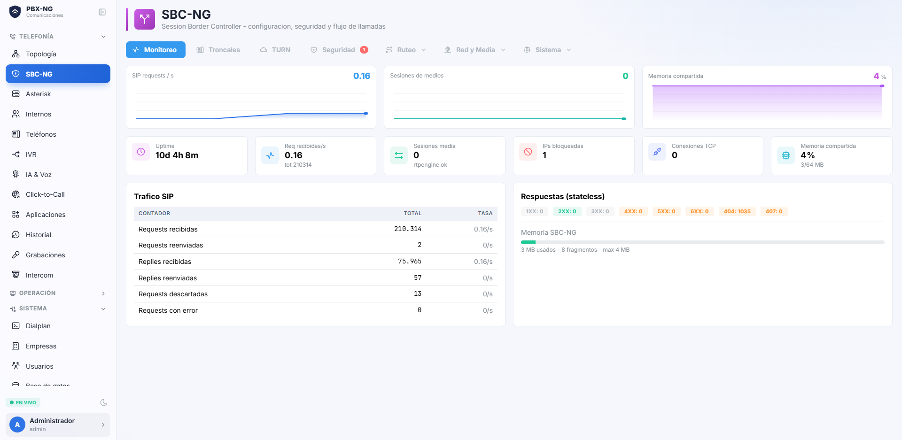
3.2 Monitoreo
La pantalla de entrada del SBC. Muestra en vivo:
| Indicador | Qué te dice |
|---|---|
| Uptime | Hace cuánto que el SBC está levantado (si se reinicia solo, hay un problema) |
| Requests SIP / s | El pulso del borde. Un pico sin llamadas = ataque |
| Sesiones de medios | Cuántas llamadas tienen el audio anclado ahora mismo |
| IPs bloqueadas | Cuántos atacantes están en la lista negra |
| Conexiones TCP | Registros por TCP/TLS activos |
| Memoria compartida | Salud interna del SBC |

3.3 Seguridad
Tres mecanismos, y conviene entender la diferencia porque se complementan:
Anti-flood (pike). Automático. Si una IP manda paquetes SIP a un ritmo anormal, se la corta en el acto. Es la defensa contra la inundación.
IPs bloqueadas (ipban). La lista negra dinámica: quien falla el registro varias veces cae acá. El panel muestra la IP, su país (con bandera) y el ISP, y permite desbloquear, bloquear a mano, o bloquear el país entero de un clic — si nunca vas a recibir llamadas legítimas desde ese país, no hay razón para dejarlo tocar el timbre.
Lista de bloqueo SIP (secfilter). Filtro por contenido: bloquea user-agents de escaneo conocidos (friendly-scanner, sipvicious), usuarios que se prueban a mansalva (100, admin, test) o países en la cabecera. Es la defensa quirúrgica.
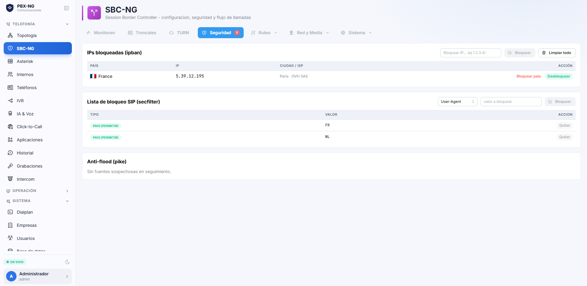
3.4 Ruteo → Operadores (LCR)
Acá se define por dónde sale cada llamada.
Un operador se carga con:
| Campo | Qué es | Ejemplo |
|---|---|---|
| Dirección | Host y puerto del proveedor | sip.operador.com:5060 |
| Strip | Cuántos dígitos sacarle al número marcado | 1 (para quitar el 0 de salida) |
| Prefijo | Qué agregarle antes de mandarlo | 598 |
| Descripción | Para que se entienda en la lista | Antel SIP |
Una regla dice: "lo que empieza con este prefijo, mandalo a estos operadores, en este orden". Si el primero no responde, la llamada se va sola al siguiente (failover). Ahí está la gracia: podés tener el operador barato primero y el confiable de respaldo.
El SBC sondea a los operadores con OPTIONS constantemente. Un operador caído se saltea antes
de intentar la llamada, no después de que el cliente escuchó silencio.
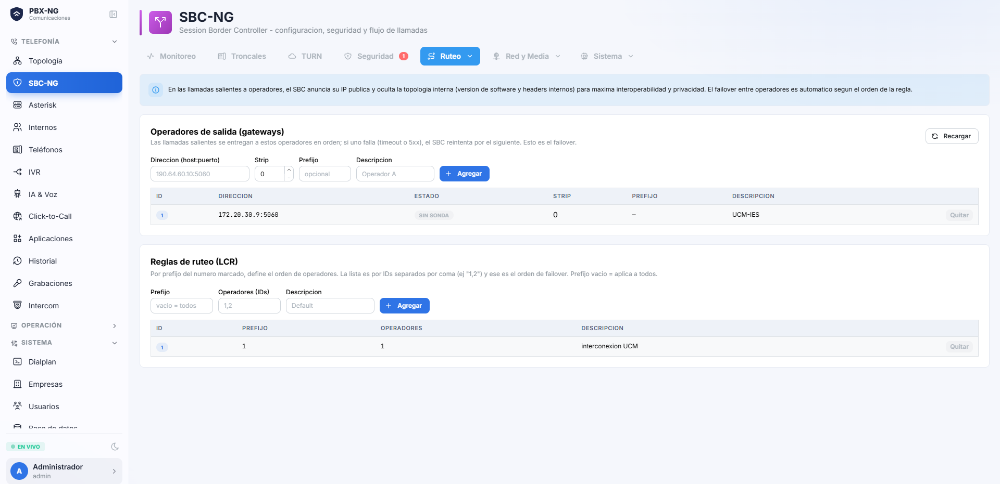
3.5 Ruteo → Manipulación SIP
El problema: cada operador quiere las cabeceras SIP a su manera. Uno exige el número de origen en P-Asserted-Identity; otro lo lee de From; otro rechaza la llamada si no ve un Diversion. Cuando el operador dice "me llegan las llamadas sin identificar", casi siempre se arregla acá.
La solución: reglas por operador que reescriben lo que sale:
| Campo | Qué hace |
|---|---|
| Acción | Agregar, reemplazar o borrar una cabecera |
| Operador | A qué proveedor se le aplica (o a todos) |
| Header | Cuál se toca: P-Asserted-Identity, From, Diversion, Remote-Party-ID… |
| Buscar (regex) | El patrón a encontrar |
| Valor | Con qué reemplazar. Se pueden usar variables: $fU = usuario del From |
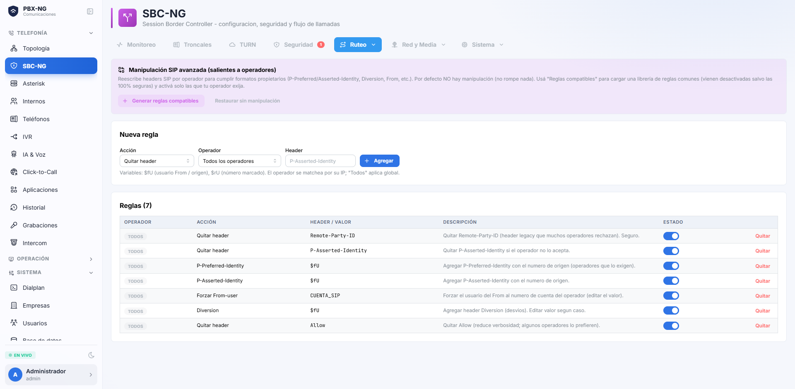
3.6 Ruteo → Dispatcher
El dispatcher es lo que el SBC usa para saber hacia qué Asterisk mandar las llamadas que entran. Podés tener más de uno, con prioridad: el de mayor prioridad recibe todo, y si deja de responder, el SBC pasa al siguiente. Es alta disponibilidad del núcleo.
El SBC mide la latencia de cada destino con OPTIONS automáticamente.
Ojo con el sentido: el dispatcher cubre lo que entra hacia el núcleo. Lo que sale
(Asterisk → operador) se resuelve con las reglas de LCR de la sección anterior. Son dos caminos
distintos y se configuran por separado.
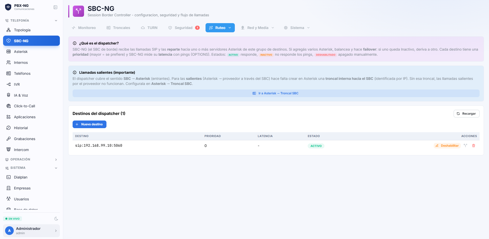
3.7 Ruteo → Remotos
La lista de internos que están registrados a través del SBC en este momento: el teleworker con el softphone en casa, el vendedor con el celular. Muestra desde qué IP se registró cada uno. Es la foto de quién está afuera y conectado.
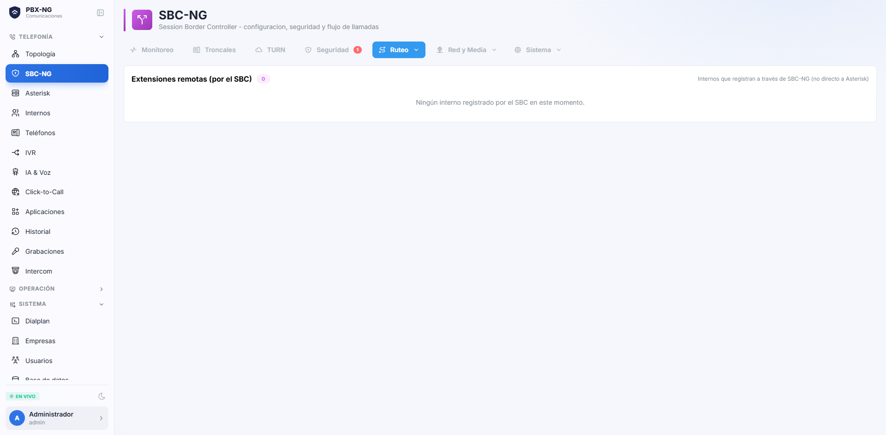
3.8 Red y Media → Red
El SBC puede tener varias salidas a Internet (multi-WAN). Acá ves las interfaces, la tabla de ruteo del kernel en vivo, y podés agregar rutas estáticas — por ejemplo: "el tráfico hacia la red del operador sale por la WAN 2".
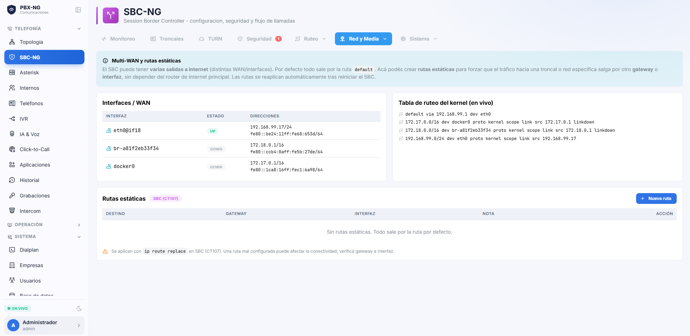
3.9 Red y Media → rtpengine
rtpengine es por donde pasa el audio. El SBC ancla los medios: la llamada entra por él y sale por él, y así el Asterisk nunca queda expuesto ni tiene que pelear con el NAT.
Acá se ve el estado del motor, las sesiones activas, y se configura el rango de puertos y la IP que se anuncia. Ese rango de puertos tiene que estar abierto en el firewall (30000-40000/UDP por defecto): si no, la llamada conecta pero nadie escucha nada.
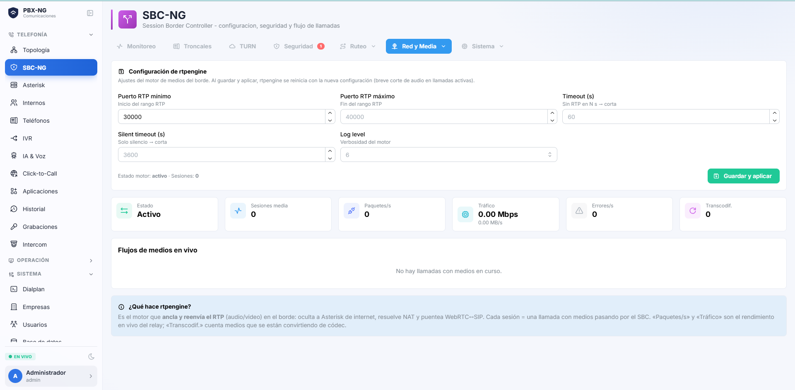
3.10 Red y Media → SIP debug
La herramienta de diagnóstico. Muestra el diálogo SIP como una escalera (quién le dijo qué a quién, en orden), permite capturar el tráfico en un archivo .pcap para abrirlo con Wireshark, y reproducir el audio de la captura.
Cuando el operador dice "el problema es de ustedes", acá está la prueba de qué mandó cada uno.
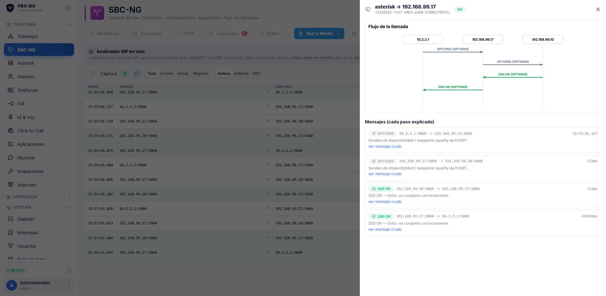
3.11 TURN
El TURN (coturn) es lo que hace que un softphone detrás de cualquier NAT tenga audio. Acá se configuran el realm, los puertos, el rango de relay y las credenciales.
Y hay un diagnóstico ICE en vivo: el panel levanta una conexión real desde tu navegador y te dice si el TURN está alcanzable y autenticado (candidato relay), o si falla y por qué. El verde no es decorativo: significa que funciona de verdad.
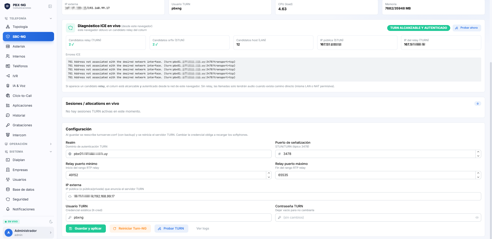
3.12 Sistema → Módulos y Configuración
Módulos: qué módulos de Kamailio están cargados. Configuración: el archivo de configuración del SBC, para verlo o editarlo cuando hace falta algo que la interfaz no cubre. Es la puerta de escape; usala con cuidado.
4. Asterisk · el núcleo
La consola de Asterisk (Asterisk en el menú) es la ventana al motor de llamadas:
| Pestaña | Qué muestra |
|---|---|
| Núcleo | Versión, uptime, llamadas activas, canales |
| Internos | Estado real de cada endpoint (registrado, en llamada, no alcanzable) |
| Troncal SBC | El enlace entre el núcleo y el borde |
| Red | Interfaces y conectividad |
| Dialplan | El plan de marcación generado, tal cual lo ve Asterisk |
| Rutas | Las rutas resueltas |
| Seguridad | Fail2ban sobre los registros SIP |
Casi nunca vas a tener que tocar nada acá: el panel genera el dialplan solo a partir de las colas, los IVR y las rutas. Es para ver y para diagnosticar.
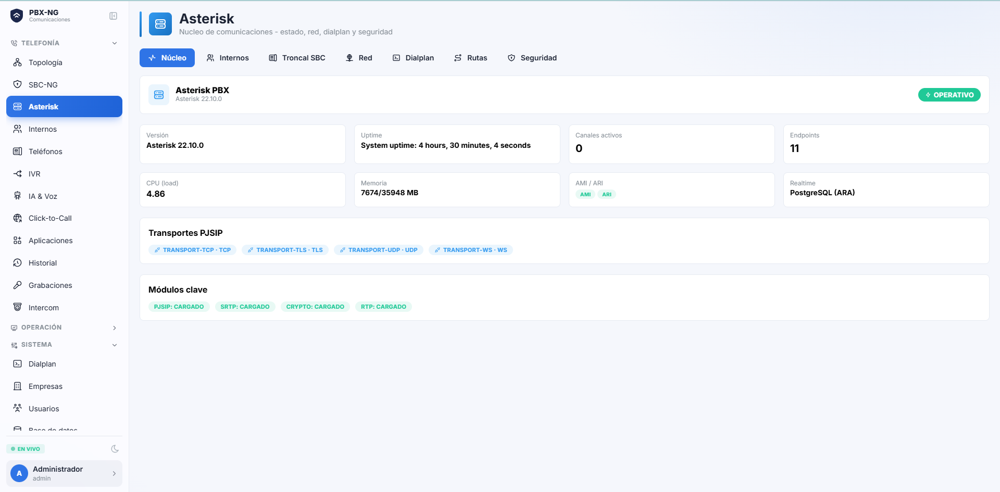
5. Troncales
La troncal es la línea que te conecta con el mundo.
5.1 Troncal SIP con un operador
En Troncales → Nueva: nombre, host y puerto del proveedor, usuario y contraseña, y si hace falta registro (la mayoría de los operadores lo exigen; los que autentican por IP, no).
El panel muestra el estado en vivo: verde si responde a OPTIONS, rojo si no.
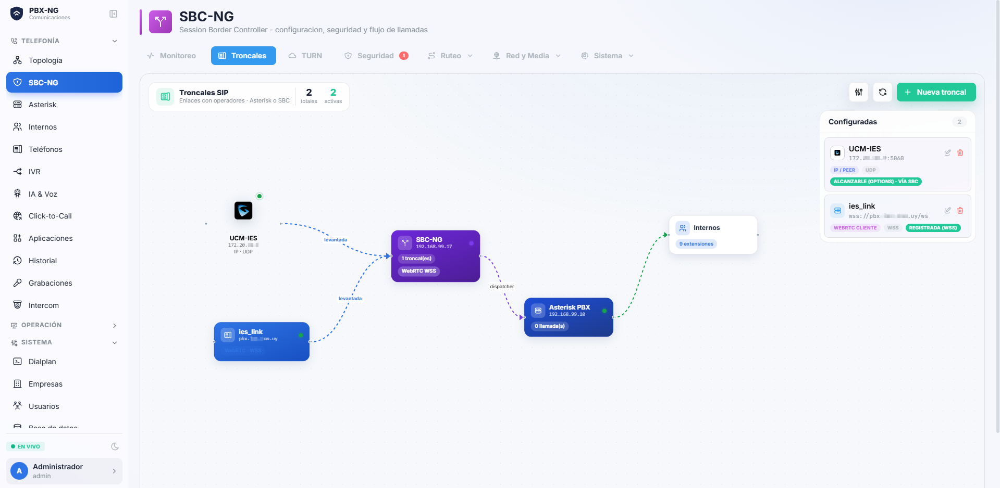
5.2 Troncal WebRTC (unir dos centrales)
Sirve para enlazar dos PBX por Internet sin abrir puertos SIP: una actúa de servidor y la otra se registra por WebSocket seguro. Se configura con el enlace WSS, usuario y contraseña.
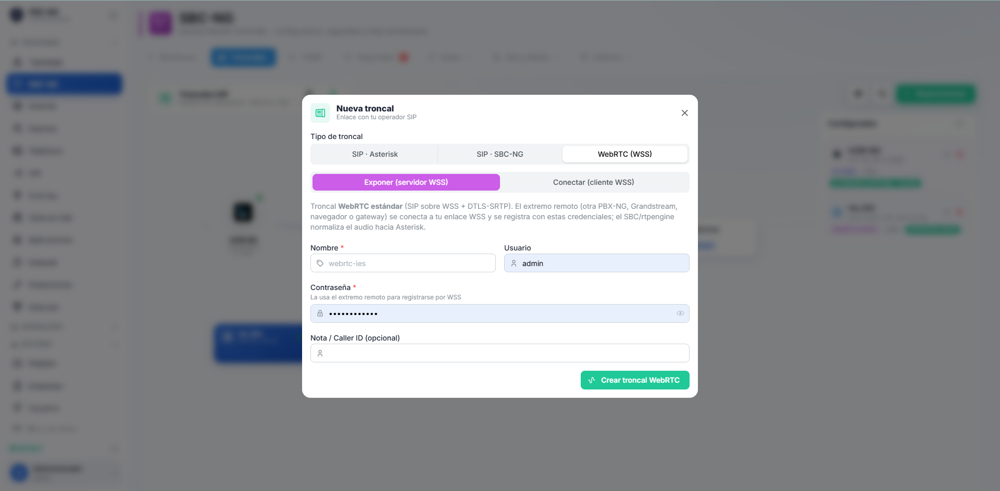
5.3 Activá la alerta
Encendé la alerta de "troncal caída" (Configuración → Alertas). Si la troncal se corta, dejás de recibir llamadas — y sin alerta te enterás cuando un cliente se queja, horas después.
6. Rutas salientes · qué se marca y por dónde sale
En Rutas → Salientes. Cada regla es un patrón de marcación y qué hacer con él.
| Campo | Qué hace | Ejemplo |
|---|---|---|
| Patrón | Qué números matchea | _0X. (todo lo que empieza con 0) |
| Strip | Dígitos a quitar del principio | 1 (saca el 0) |
| Prepend | Qué agregar adelante | 598 |
| Caller ID | Con qué número te ven | +59824001234 |
| Troncal | Por dónde sale | La troncal o el SBC |
Ejemplo real: el usuario marca 099123456. Con strip=0 y la troncal del operador, sale tal cual. Si el operador exige formato internacional, ponés strip=1 y prepend=598 → sale 59899123456.
Las reglas se evalúan de arriba hacia abajo. Poné las más específicas primero (emergencias,
internacional) y las genéricas al final.
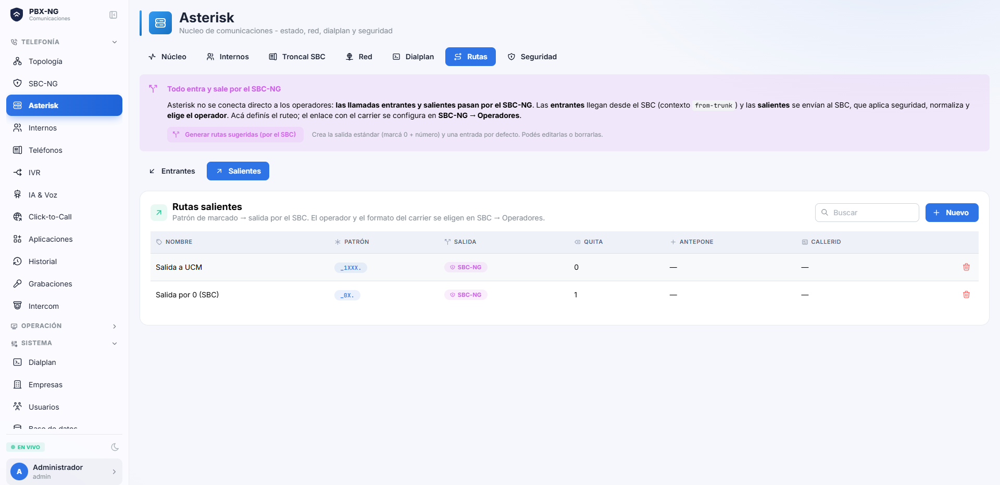
7. Rutas entrantes · qué pasa cuando te llaman
En Rutas → Entrantes. Una ruta entrante toma el número al que llamaron (DID) y lo manda a un destino.
| Campo | Qué es |
|---|---|
| DID | El número que te asignó el operador |
| Nombre | Para identificarla en la lista |
| Destino | Interno, cola, IVR, buzón o conferencia |
Ejemplo: el 24001234 (línea principal) va al IVR de bienvenida; el 24001299 (ventas directo) va a la cola de Ventas.
Si una llamada entrante "no llega a ningún lado", el 90% de las veces es que **falta la ruta
entrante** para ese DID, o que el operador te está mandando el número en otro formato del que
cargaste (con o sin el código de país). Miralo en SBC → SIP debug.
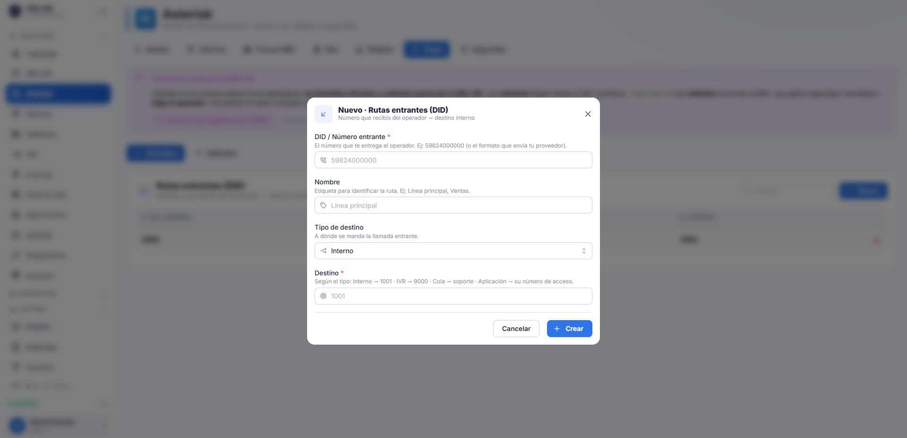
8. Internos
8.1 Crear un interno
En Internos → Nuevo. Lo mínimo es el número y el nombre. Cada interno nace con su contraseña SIP generada y su buzón de voz activado (PIN inicial = su número).
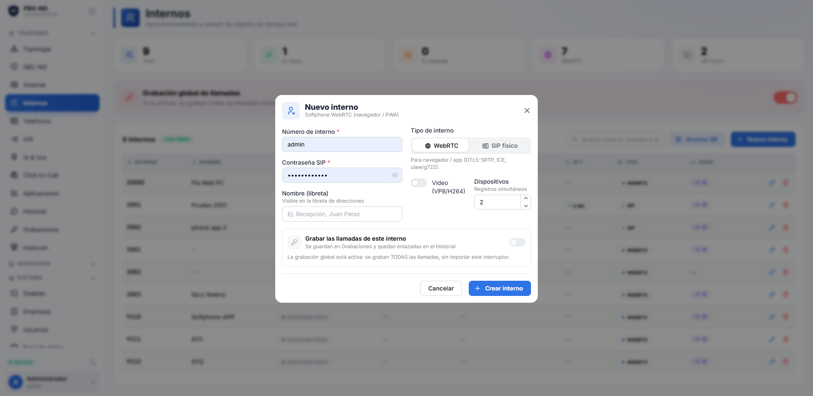
8.2 ¿WebRTC o SIP?
Es la decisión más importante del alta y define qué recibe el usuario en su enlace.
| WebRTC | SIP clásico | |
|---|---|---|
| Para qué | Softphone en navegador, celular o escritorio | Teléfonos de escritorio, ATAs, bocinas IP |
| Cómo viaja | Cifrado (DTLS-SRTP) sobre WebSocket, puerto 443 | SIP sobre UDP/TCP/TLS |
| Detrás de NAT | Anda sin abrir nada (usa TURN) | Requiere red preparada |
| Cuándo | Por defecto, para personas | Para hardware |
No los mezcles. Un interno WebRTC registrado en modo SIP **autentica pero se queda sin
audio**: el endpoint exige cifrado. Es una confusión clásica y difícil de diagnosticar. El enlace
de acceso ya viene con el modo correcto según el interno.
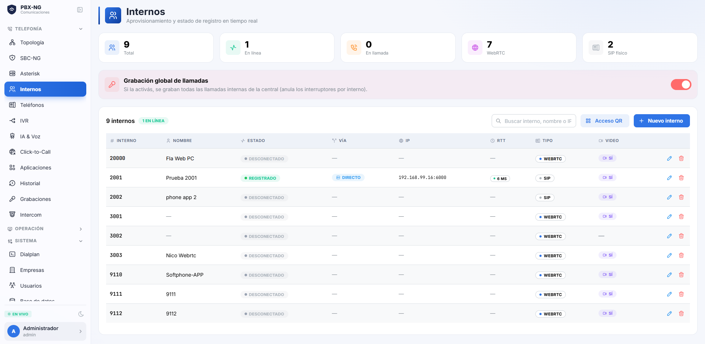
8.3 Teléfonos físicos
En Teléfonos se aprovisionan por MAC (Yealink, Grandstream): el teléfono baja su configuración solo al arrancar.
9. Correo saliente
Sin esto no funciona el envío del QR, ni el buzón por correo, ni las alertas. Es de las primeras cosas que conviene dejar andando.
En Configuración → Email:
| Campo | Valor típico |
|---|---|
| Host | smtp.gmail.com |
| Puerto | 587 (STARTTLS) o 465 (SSL) |
| Usuario | La cuenta completa (no-reply@tu-empresa.com) |
| Contraseña | Ver el aviso de abajo |
| Remitente | Central <no-reply@tu-empresa.com> |
Guardá y usá el botón Probar: si algo está mal, el sistema te dice exactamente qué (credencial rechazada, no conecta, remitente inválido).
Con Gmail o Google Workspace: si la cuenta tiene verificación en dos pasos, **la contraseña
normal no sirve para SMTP. Hay que generar una contraseña de aplicación** (16 caracteres) en
myaccount.google.com/apppasswordscon esa cuenta. Es el error más frecuente de esta pantalla, yel panel te lo señala con esas palabras.
>
Alternativa más robusta para una cuenta
no-reply: usar el SMTP relay de Google autorizandola IP pública de la central. No hay contraseña que rotar ni que se venza.
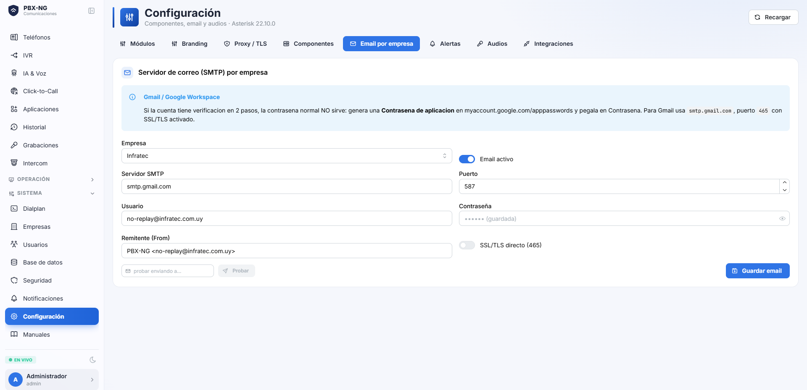
10. Entrega del teléfono: QR y enlace de acceso
Este es el proceso que reemplaza al "te paso la contraseña por WhatsApp".
10.1 Cómo se manda
En Internos, sobre el interno, botón Enviar acceso por correo. Escribís la dirección de la persona y listo.
10.2 Qué recibe la persona
Un correo con un código QR y un enlace. Con cualquiera de los dos, su teléfono queda configurado solo.
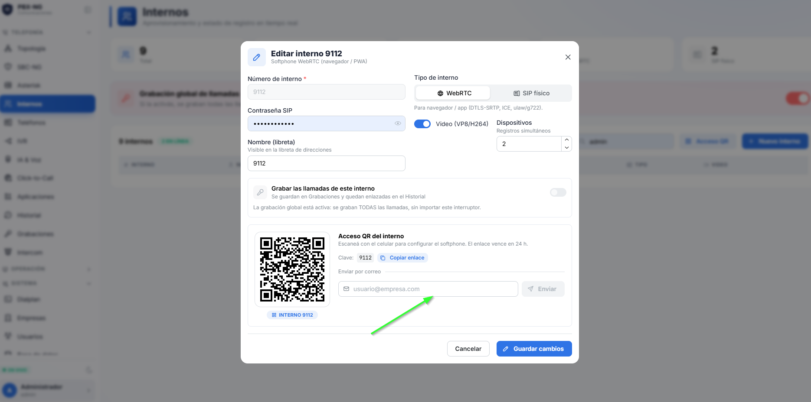
10.3 Qué lleva adentro el enlace
Es importante que sepas qué estás mandando, porque explica por qué funciona sin que el usuario configure nada:
- El transporte correcto según el interno: si es WebRTC, va con el servidor WebSocket y las
credenciales del TURN; si es SIP, va con el servidor SIP, el puerto y el transporte. El sistema lo deduce del endpoint real, no lo asume.
- El interno y su contraseña.
- La sesión en la plataforma (si el interno tiene un usuario asociado): así la persona ve el
directorio, la ficha de los clientes y el intercom sin volver a loguearse.
10.4 Reglas del enlace
- Vence en 24 horas. Si expira, se genera uno nuevo.
- Sirve para los tres clientes: navegador, celular (agregar a la pantalla de inicio) y app de
escritorio (botón QR → "Pegar código").
- Se puede reenviar las veces que haga falta.
Para que el usuario vea clientes e intercom, el interno tiene que tener un usuario asociado
en Usuarios (con su rol). Si no lo tiene, el enlace configura el teléfono igual, pero sin
sesión en la plataforma.
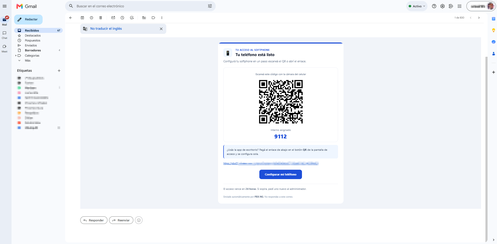
11. Aplicaciones
11.1 Colas
En Aplicaciones → Colas → Nueva cola. Tres pestañas.
Básico:
| Campo | Recomendación |
|---|---|
| Estrategia | Round-robin con memoria reparte parejo |
| Timbrado del agente | 20-25 segundos |
| Descanso del agente | Al menos 10 s; en 0 el agente se quema |
| Capacidad máxima | 0 = sin límite |
| Espera máxima + destino | Buzón o interno de respaldo |
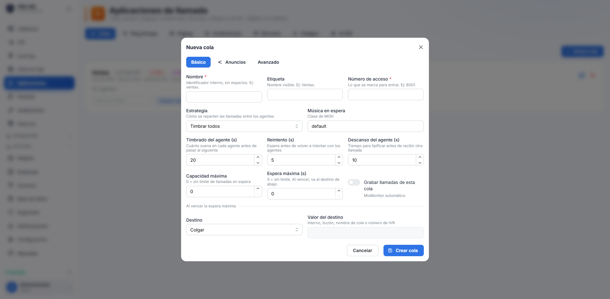
Anuncios: acá está la diferencia con otras centrales — no se suben archivos de audio. Escribís el texto, elegís la voz, lo escuchás, y el sistema lo sintetiza y lo publica solo.
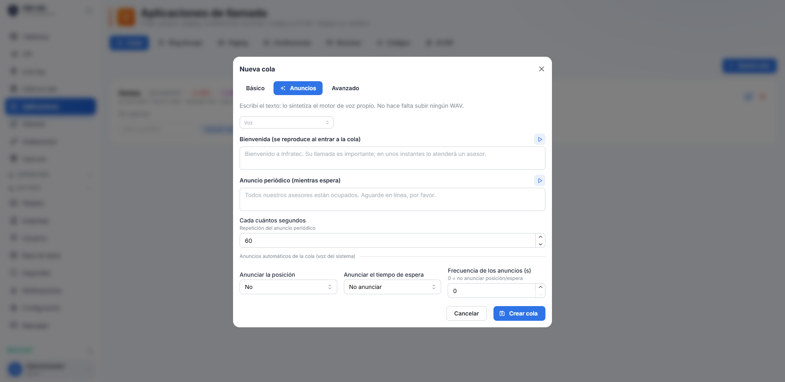
Avanzado: qué hacer si no hay agentes, SLA objetivo, pausa automática al que no atiende.
11.2 IVR
El menú de bienvenida ("marque 1 para ventas"). Se arma visualmente y los audios se generan por texto, igual que en las colas.
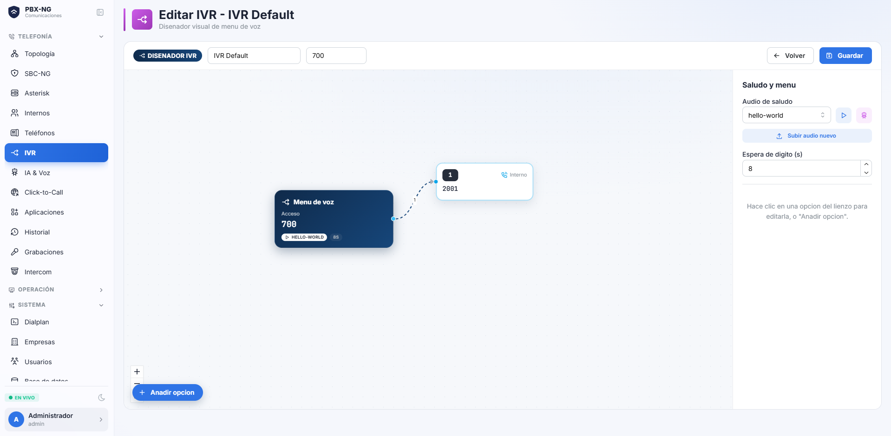
11.3 Buzones de voz
Cada interno ya tiene el suyo (97 para escucharlo). En Aplicaciones → Buzones, panel "Mensaje de voz al correo"*: cargás la dirección y cada mensaje nuevo llega por mail con el audio adjunto y la transcripción automática.
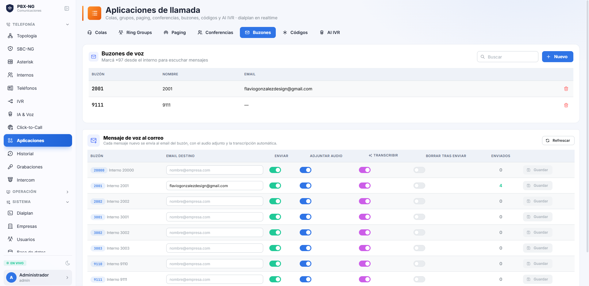
11.4 Conferencias, grupos de timbrado, paging y códigos
Salas de conferencia con PIN, grupos que suenan a la vez, voceo por parlantes, y los códigos de función (97, 98, etc.).
12. Alertas
En Configuración → Alertas. Cargá el destinatario y encendé lo que quieras. Cada alerta tiene un botón de prueba que manda el correo sin necesidad de activarla.
| Alerta | Cuándo llega |
|---|---|
| Estamos bajo ataque | Ráfaga de registros fallidos. Llega una alerta agrupada, no una por IP |
| IP bloqueada | El firewall bloqueó una IP (con país e ISP) |
| Inicio de sesión al panel | Por defecto, solo desde una IP nueva |
| Intentos fallidos al panel | Posible fuerza bruta |
| Troncal caída / recuperada | Se cortó (o volvió) la línea |
| Servicio caído | Base de datos o Asterisk sin conexión |
| Cola sin agentes | En horario laboral no hay quien atienda |
| Llamada muy larga | Primer síntoma de fraude telefónico |
| Salientes fuera de horario | El patrón clásico: ráfaga de madrugada |
| Llamada internacional | Destinos que no deberían marcarse |
| Resumen diario | Un correo a la mañana con lo de ayer |
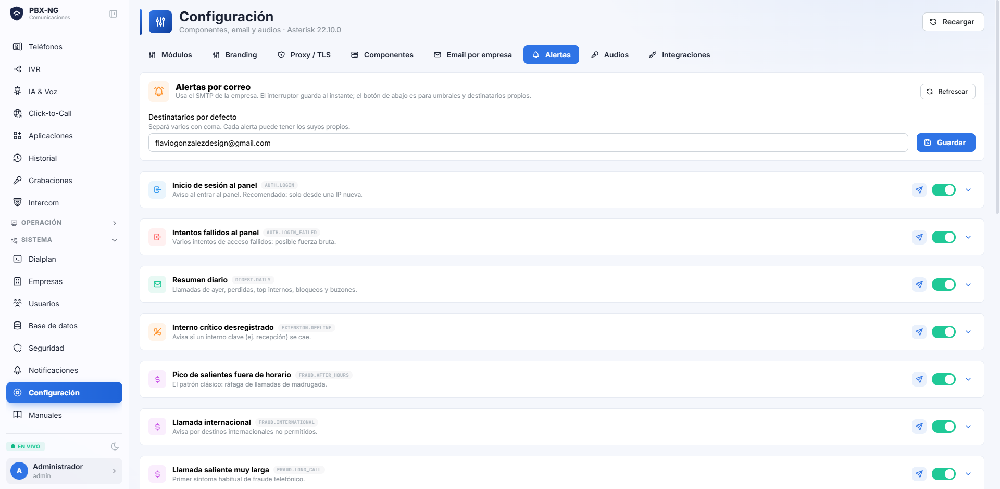
13. Grabaciones
Se graba por interno, por cola o todo. Se escuchan desde Grabaciones, con reproductor y transcripción por IA a pedido.
El disco crece rápido: alrededor de 0,5 MB por minuto grabado. Hacé la cuenta antes.
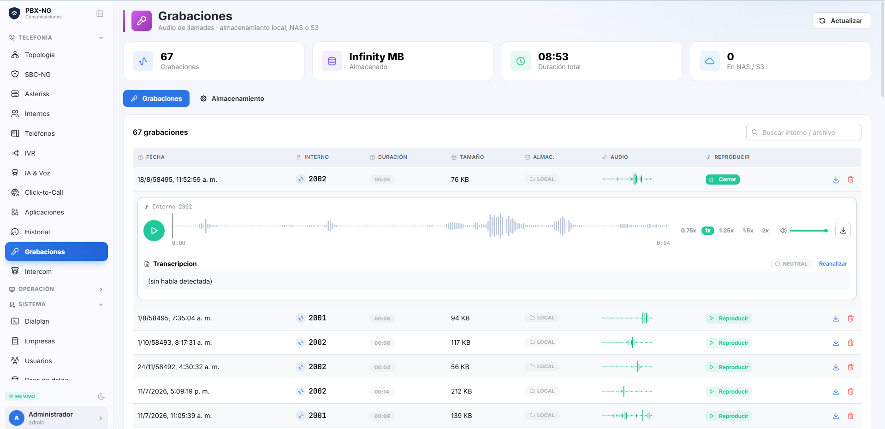
14. Seguridad
Además del SBC, el núcleo tiene Fail2ban sobre los registros SIP: quien intenta adivinar contraseñas queda bloqueado. La sección Seguridad muestra las IPs bloqueadas con su país y permite desbloquear o bloquear a mano.
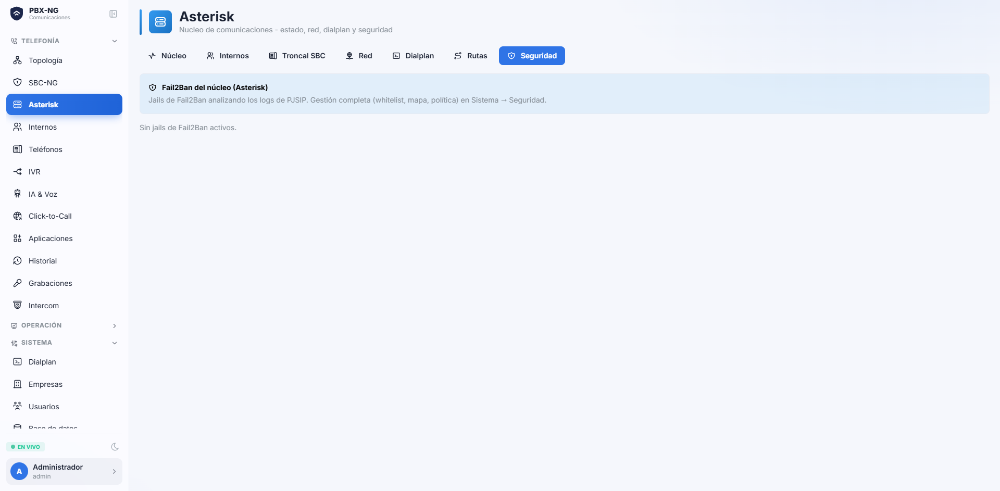
15. Usuarios y roles
En Usuarios. Cada persona puede tener un interno asociado — y eso es lo que habilita que su softphone vea clientes e intercom.
| Rol | Qué puede hacer |
|---|---|
| Administrador | Todo |
| Supervisor | Monitorear colas y agentes, escuchar/susurrar/irrumpir, gestionar clientes |
| Agente | Su softphone, su historial y su buzón |
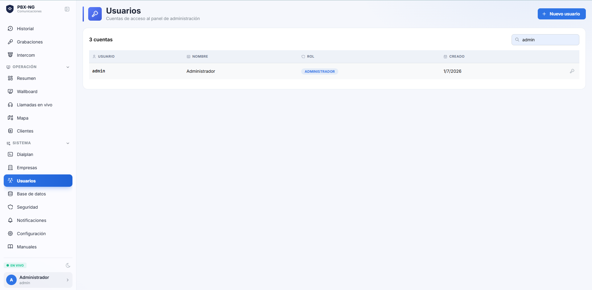